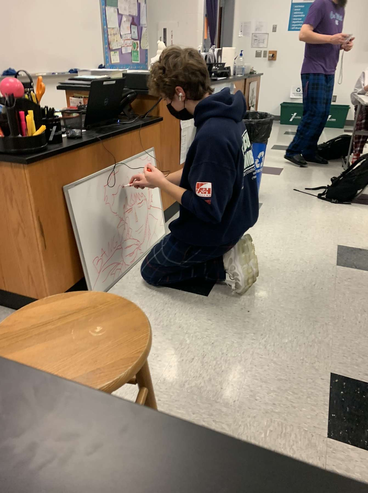
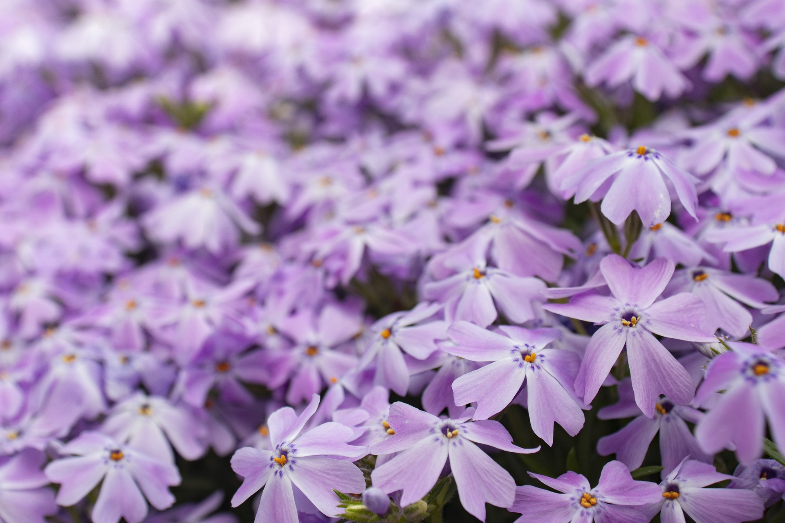
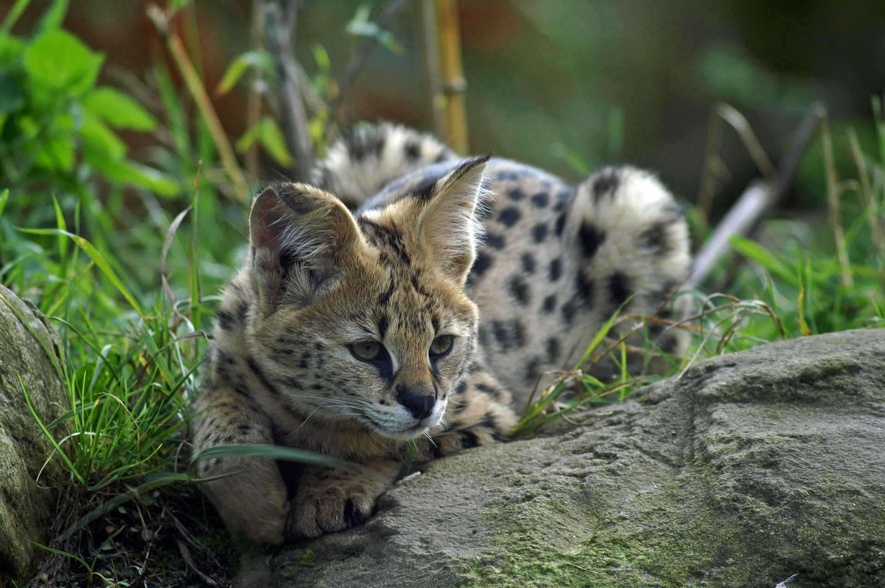
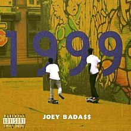
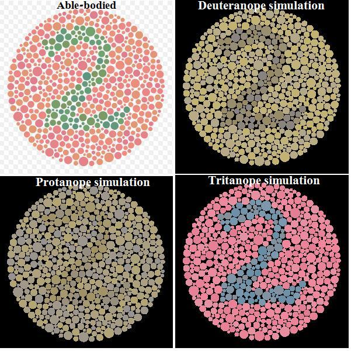

This is a webpage all about me. My likes, dislikes, hopes, dreams, and favorite things.
I am a student at Cox Mill Highschool and am new to dreamweaver. I have a job at a local italian restaurant. I also have a one sister and one dog.
In my spare time I like to work out, play games, and do various things with my friends.
“I would rather die a meaningful death than to live a meaningless life.” — Corazon Aquino
Other Favorite Things
| Favorite Flower | Blue Lilac |  |
|---|---|---|
| Favorite Weather | Light Rain | |
| Favortie Drink | Water | |
| Favorite Animal | Serval |  |
| Favorite Song | Survival Tactics (JoeyBada, Capital STEEZ, prod. Vin Skully) |  |
| Favorite Color | I am colorblind :)) |  |
Email: thisisarealemail@email.com
Phone: 230-340-5670